Canary Islands, 2017Ilhas Canárias, 2017Îles Canaries, 2017
- BaseBaseBase
- Las Galletas, Tenerife
- BoatBarcoBateau
- El Camino
- DistanceDistânciaDistance
- about 175 nmcerca de 175 mnenviron 175 milles
The line is the track recorded by El Camino's chart plotter. Hover over or tap a dot for the place and date. Click the map to zoom with the wheel.A linha é o trajeto gravado pelo plotter do El Camino. Passe o mouse ou toque num ponto para ver o lugar e a data. Clique no mapa para usar o zoom com a roda do mouse.La ligne est la trace enregistrée par le traceur de El Camino. Survolez ou touchez un point pour voir le lieu et la date. Cliquez sur la carte pour zoomer avec la molette.
In September 2017 three club boats, El Camino, Mojito and Tinto, spent a week sailing between the western Canary Islands. I sailed on El Camino and helped organise the trip. Her chart plotter recorded the whole loop, about 175 nautical miles, and that track is the line on the map above.
Tenerife to La Gomera
We started from Marina del Sur at Las Galletas, on the dry southern tip of Tenerife, with Mount Teide behind us. The first leg crossed to San Sebastián de La Gomera, about 30 nautical miles to the west. The channels between these islands are known for wind that speeds up as it squeezes between the mountains, so crossings here are rarely gentle.
San Sebastián is a quiet harbour town, best known as the last port Columbus called at before crossing the Atlantic in 1492. For us it was the jumping-off point for the longest leg of the week.
Em setembro de 2017 três barcos do clube, El Camino, Mojito e Tinto, passaram uma semana velejando entre as ilhas ocidentais das Canárias. Eu velejei no El Camino e ajudei a organizar a viagem. O plotter do barco gravou o percurso inteiro, cerca de 175 milhas náuticas, e esse trajeto é a linha do mapa acima.
De Tenerife a La Gomera
Saímos da Marina del Sur, em Las Galletas, no extremo sul e seco de Tenerife, com o Teide atrás de nós. A primeira perna atravessou até San Sebastián de La Gomera, cerca de 30 milhas a oeste. Os canais entre estas ilhas são conhecidos pelo vento que acelera ao passar entre as montanhas, então as travessias aqui raramente são suaves.
San Sebastián é uma cidade portuária tranquila, conhecida por ter sido o último porto onde Colombo parou antes de atravessar o Atlântico em 1492. Para nós foi o ponto de partida da perna mais longa da semana.
En septembre 2017, trois bateaux du club, El Camino, Mojito et Tinto, ont navigué une semaine entre les îles occidentales des Canaries. J'étais à bord d'El Camino et j'ai aidé à organiser le voyage. Son traceur a enregistré toute la boucle, environ 175 milles nautiques : c'est la ligne de la carte ci-dessus.
De Tenerife à La Gomera
Nous sommes partis de la Marina del Sur à Las Galletas, à la pointe sud et aride de Tenerife, le Teide dans le dos. La première étape traversait jusqu'à San Sebastián de La Gomera, à une trentaine de milles à l'ouest. Les canaux entre ces îles sont connus pour leur vent qui accélère en passant entre les montagnes : les traversées y sont rarement douces.
San Sebastián est un port tranquille, connu pour avoir été la dernière escale de Colomb avant sa traversée de l'Atlantique en 1492. Pour nous, c'était le point de départ de la plus longue étape de la semaine.
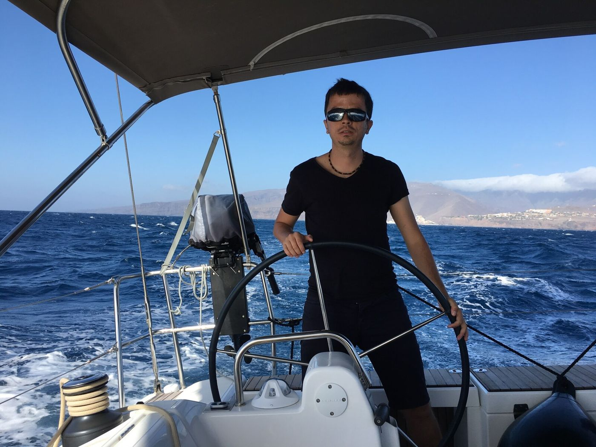
La Palma: telescopes above the clouds
From San Sebastián we sailed north-west for more than 50 nautical miles to Santa Cruz de La Palma, the capital of the island its people call La Isla Bonita. The old town has wooden balconies and houses painted in strong colours, a short walk from the marina.
On 26 September we went up to the Roque de los Muchachos, the highest point of the island at about 2,400 metres. The observatory there is one of the best places in the world to look at the sky, and its domes, including the Gran Telescopio Canarias, line the rim of the Caldera de Taburiente. That afternoon the trade-wind clouds were pouring over the rim into the crater below us, like a slow waterfall.
In the evening I climbed the hill above Santa Cruz and watched the town and the harbour light up one street at a time.
La Palma: telescópios acima das nuvens
De San Sebastián velejamos mais de 50 milhas para noroeste até Santa Cruz de La Palma, a capital da ilha que os moradores chamam de La Isla Bonita. A cidade velha tem varandas de madeira e casas pintadas em cores fortes, a poucos passos da marina.
Em 26 de setembro subimos ao Roque de los Muchachos, o ponto mais alto da ilha, a cerca de 2.400 metros. O observatório de lá é um dos melhores lugares do mundo para observar o céu, e suas cúpulas, entre elas a do Gran Telescopio Canarias, ficam na borda da Caldera de Taburiente. Naquela tarde as nuvens dos alísios transbordavam pela borda para dentro da cratera, como uma cachoeira lenta.
À noite subi o morro acima de Santa Cruz e vi a cidade e o porto acenderem as luzes, uma rua de cada vez.
La Palma : des télescopes au-dessus des nuages
De San Sebastián, nous avons fait plus de 50 milles vers le nord-ouest jusqu'à Santa Cruz de La Palma, capitale de l'île que ses habitants appellent La Isla Bonita. La vieille ville a des balcons de bois et des maisons aux couleurs vives, à quelques pas de la marina.
Le 26 septembre, nous sommes montés au Roque de los Muchachos, point culminant de l'île à environ 2 400 mètres. L'observatoire y est l'un des meilleurs sites au monde pour observer le ciel, et ses coupoles, dont celle du Gran Telescopio Canarias, bordent la Caldera de Taburiente. Cet après-midi-là, les nuages des alizés se déversaient par-dessus la crête dans le cratère, comme une cascade au ralenti.
Le soir, je suis monté sur la colline au-dessus de Santa Cruz pour voir la ville et le port s'allumer, une rue après l'autre.
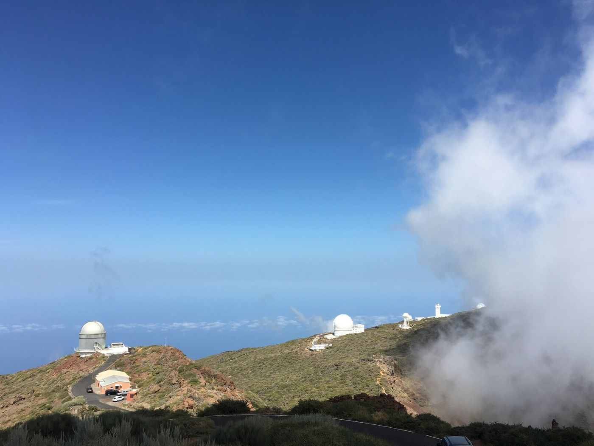
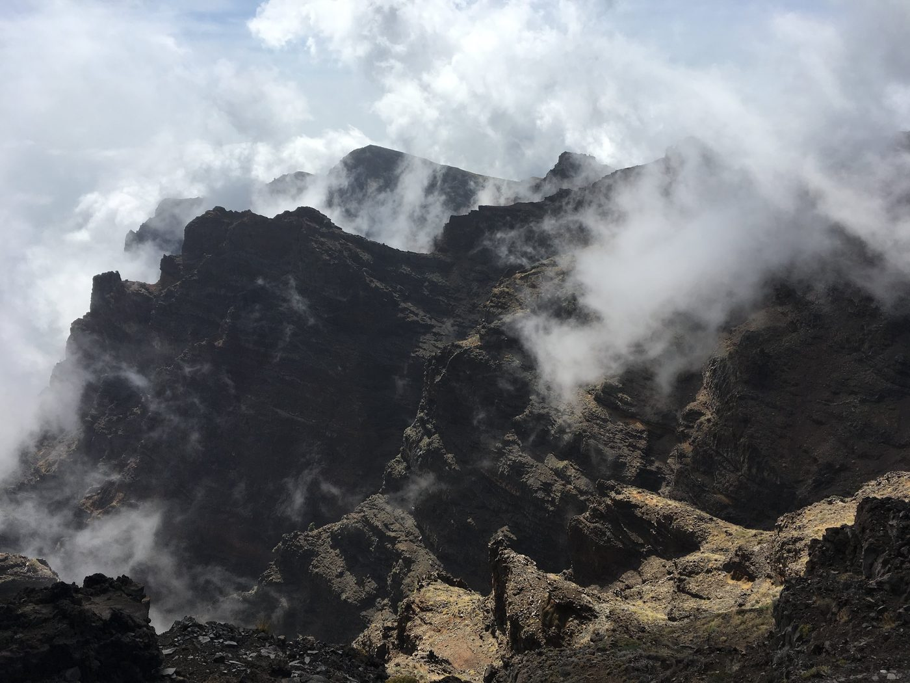
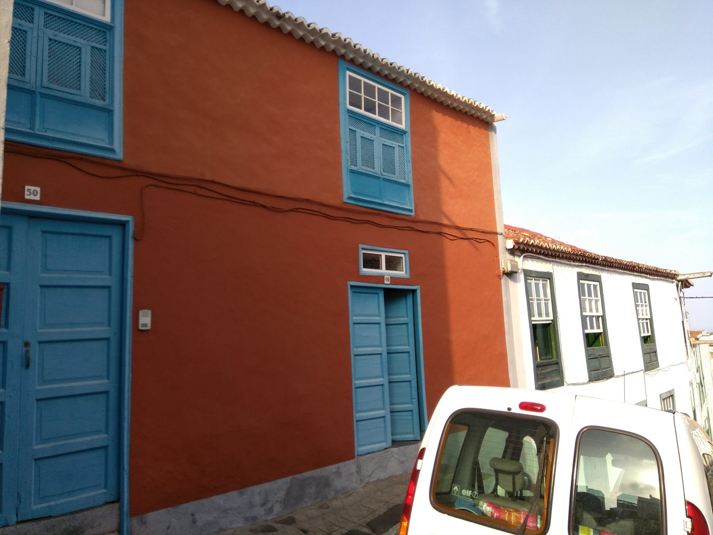
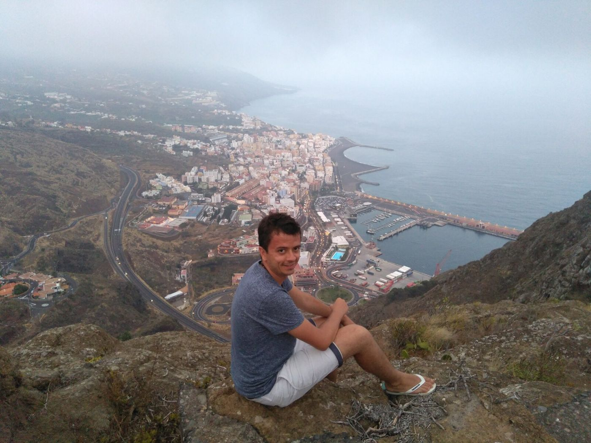
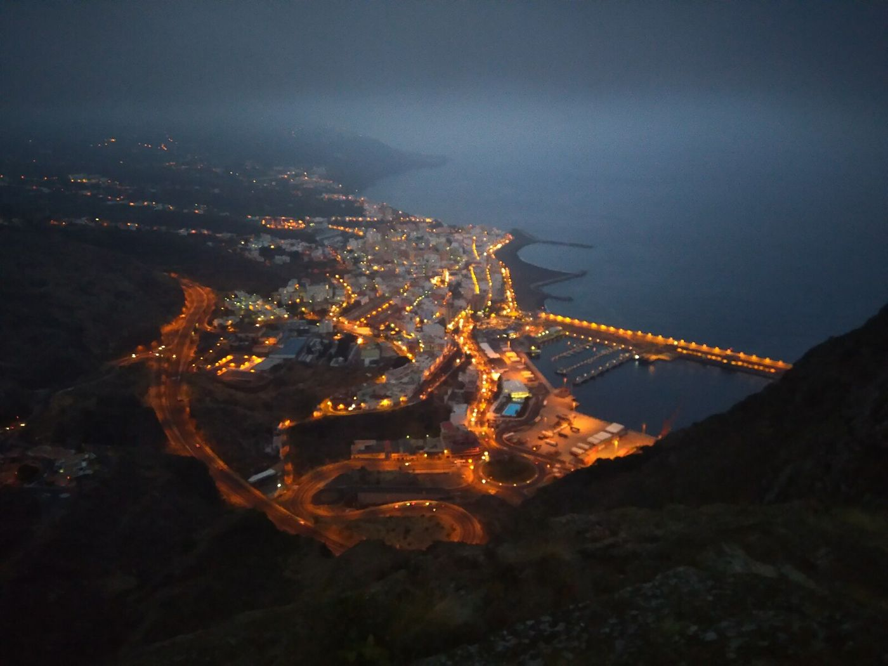
Valle Gran Rey
On the 27th we sailed back south-east, 44 nautical miles, to Valle Gran Rey on the west side of La Gomera, and anchored under cliffs several hundred metres high. The sun set straight out to sea behind the boats.
The next day we went ashore and walked. The path climbed out of the valley onto dry, open ridges with views over the whole island, and came back down through a narrow green gully where water still runs between the rocks.
Valle Gran Rey
No dia 27 velejamos de volta para sudeste, 44 milhas, até Valle Gran Rey, no lado oeste de La Gomera, e ancoramos sob falésias de centenas de metros. O sol se pôs direto no mar, atrás dos barcos.
No dia seguinte fomos a terra caminhar. A trilha subia do vale até cristas secas e abertas, com vista para a ilha inteira, e descia de volta por uma ravina estreita e verde, onde a água ainda corre entre as pedras.
Valle Gran Rey
Le 27, nous sommes redescendus au sud-est, 44 milles, jusqu'à Valle Gran Rey, sur la côte ouest de La Gomera, et avons mouillé sous des falaises hautes de plusieurs centaines de mètres. Le soleil s'est couché droit sur la mer, derrière les bateaux.
Le lendemain, nous sommes allés marcher à terre. Le sentier sortait de la vallée par des crêtes sèches et dégagées, avec vue sur toute l'île, et redescendait par un ravin étroit et vert où l'eau coule encore entre les rochers.
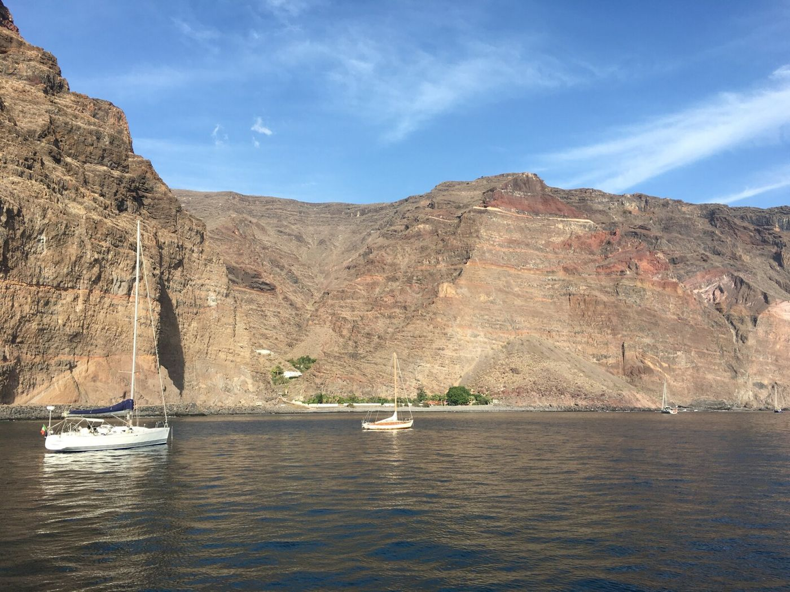
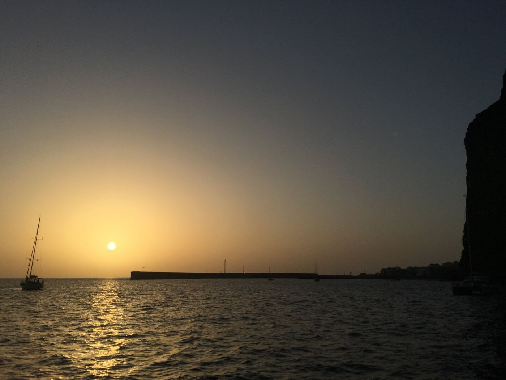
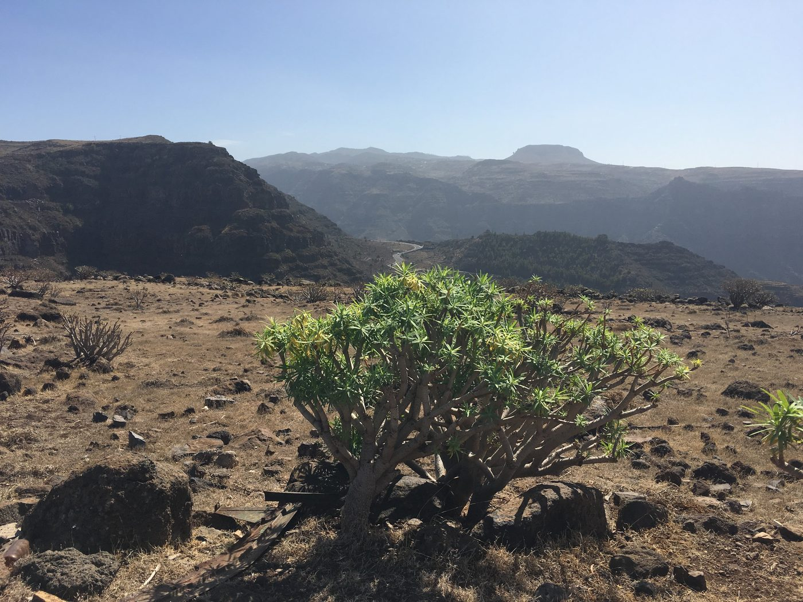
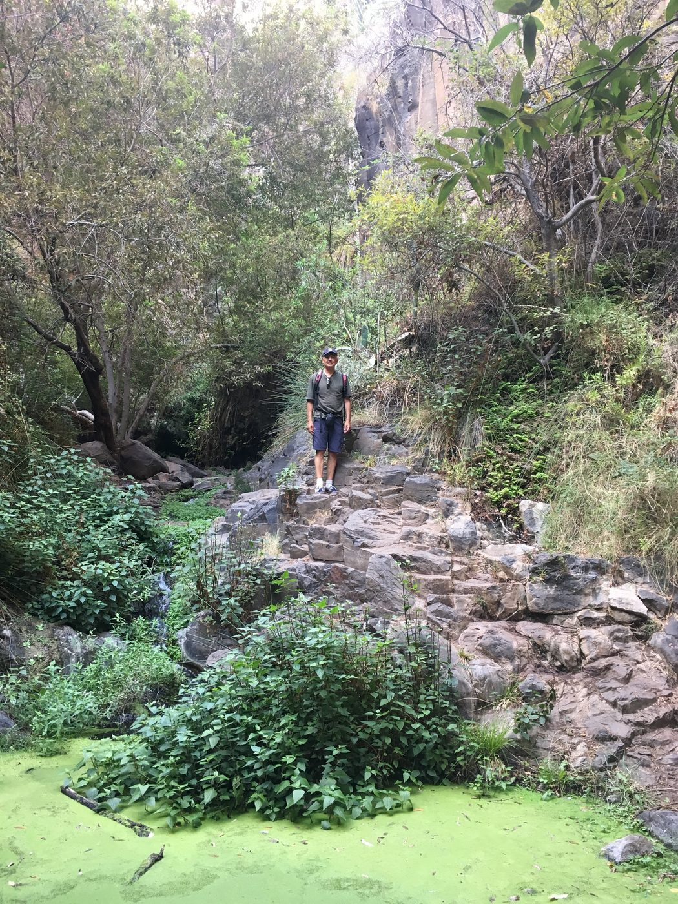
Back to Tenerife
From Valle Gran Rey we sailed round the south of La Gomera to San Sebastián and then crossed back to Las Galletas. On the way, a group of dolphins came to swim at the bow, as they often do in these waters.
The legs, from the plotter track
De volta a Tenerife
De Valle Gran Rey contornamos o sul de La Gomera até San Sebastián e depois atravessamos de volta a Las Galletas. No caminho, um grupo de golfinhos veio nadar na proa, como fazem com frequência nestas águas.
As pernas, pelo trajeto do plotter
Retour à Tenerife
De Valle Gran Rey, nous avons contourné le sud de La Gomera jusqu'à San Sebastián, puis traversé jusqu'à Las Galletas. En route, un groupe de dauphins est venu nager à l'étrave, comme souvent dans ces eaux.
Les étapes, d'après la trace du traceur
| DayDiaJour | LegPernaÉtape | DistanceDistânciaDistance |
|---|---|---|
| 1 | Las Galletas → San Sebastián de La Gomera | 29.7 nm |
| 2 | San Sebastián → Santa Cruz de La Palma | 53.2 nm |
| 3 | Santa Cruz de La Palma → Valle Gran Rey | 44.1 nm |
| 4 | Valle Gran Rey → San Sebastián | 19.1 nm |
| 5 | San Sebastián → Las Galletas | 28.6 nm |
| TotalTotalTotal | 175 nm |
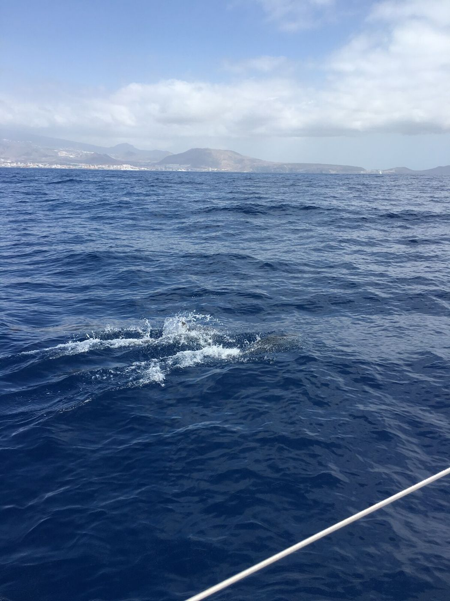
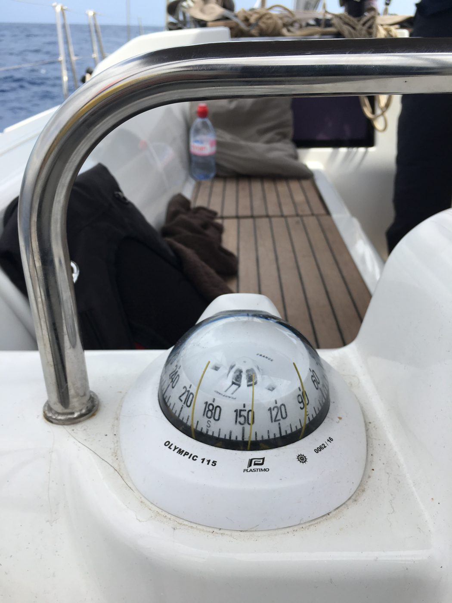